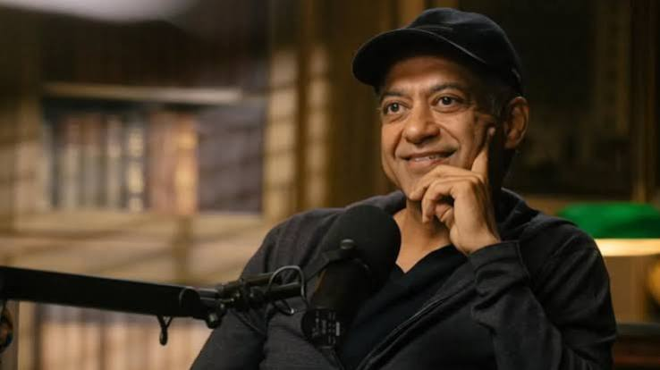

Danielle is an Anishinaabe (enrolled Sault Tribe) robotics inventor, youth educator, and activist. Her primary interests involve improving access to STEM education for historically underrepresented youth and exploring how emerging technologies can be leveraged ethically to protect and preserve Indigenous data sovereignty, cultures, and languages.
Her journey started in high school where she first got to explore her interests by joining a local robotics team. As one of very few girls, and the only Native American student on the team, she faced exclusion and disrespect from her peers. She was not discouraged but instead fought for the respect she deserved and ultimately discovered a deeper passion. Recognizing how technology education holds the power to enable economic development, connectivity, and innovation, she committed to bringing that education more equitably to all youths.
Danielle is best known for her founding of The STEAM Connection – a youth-led nonprofit organization aiming to provide culturally grounded technical youth education to underserved groups around the world. The organization was founded out of her exhaustion and frustration with systemic inaccessibility of technical education and resources for school-aged youths in indigenous communities. Her organization aims to address these disparities by developing and distributing quality technical education resources to these groups as well as other underrepresented groups worldwide.
The work that Danielle and her organization engage in is vital to building a more diverse STEM community, and bringing digital literacy to underserved indigenous communities. By bringing awareness to racial and gender gaps in demographics that persist in STEM fields, she and her organization aim to ultimately close them. By reducing inequities that prevent many minorities and females from entering STEM fields, the world stands to benefit from more diverse STEM figures and role models who will build tools for the world that use them.

Naval Ravikant is an Indian-American entrepreneur, investor, and technology leader. He is best known for co-founding AngelList, a platform that helps startups connect with investors and raise funding. He is also known for his early investments in major technology companies like Uber and Twitter. Outside of his business accomplishments, Naval has become popular for sharing his thoughts on technology, wealth, education, and personal happiness.
Naval was born in India and moved to the United States when he was young. Growing up in New York City, he developed an interest in reading, computers, and learning. He eventually attended Dartmouth College, where he studied computer science and economics. He later entered the technology industry and founded several businesses. His experiences as an entrepreneur helped him recognize some of the barriers that new startups face when trying to get financial support.
One of Naval's biggest contributions to technology is AngelList, which he co-founded in 2010. Before platforms like AngelList, startup founders often needed personal connections to wealthy investors to raise money. AngelList helped make this process more accessible by using the internet to connect entrepreneurs and investors. This created more opportunities for people to develop new businesses and technological products. Naval also believes that the internet has given individuals new ways to build businesses and create wealth without needing the same resources as large corporations.
I chose Naval as my tech hero because I appreciate his perspective on entrepreneurship and the opportunities created by technology. His work demonstrates how technology can help reduce certain barriers to starting a business, although access to funding and resources is still unequal. I also find his emphasis on independent thinking, continuous learning, and using technology to create value especially interesting. His contributions show how technology can influence not only the products we use, but also who has the opportunity to build businesses and participate in the economy.